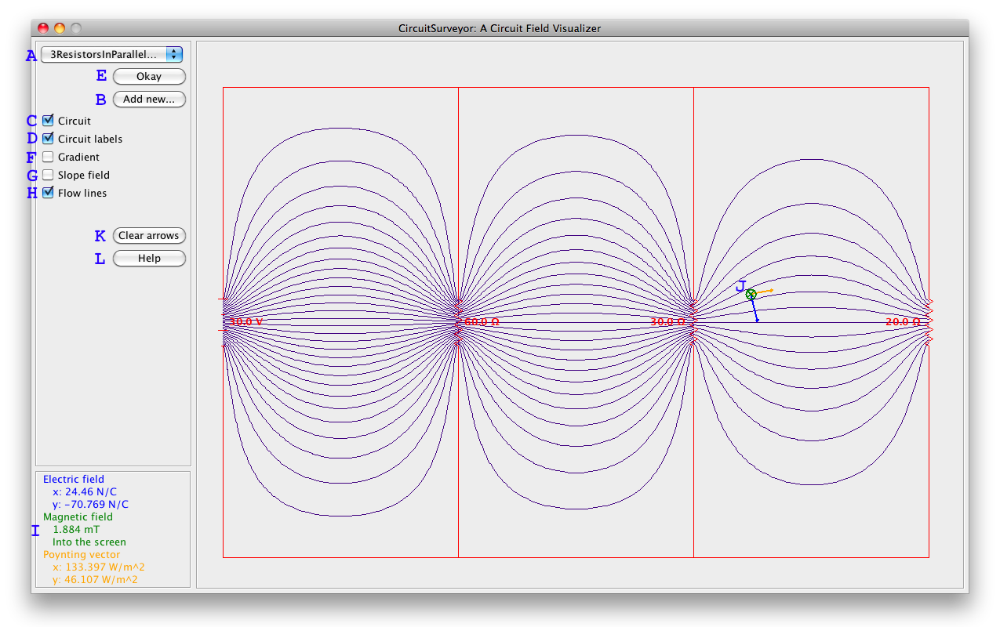

Select a circuit file from the drop-down menu (A). (Use the Add new... button (B) to choose files from the local file system to add to the drop-down list. See this page for instructions on creating custom circuit files.)
The program will draw the selected circuit. The Circuit and Circuit labels checkboxes (C and D) toggle whether or not the circuit diagram and the labels specifying the battery potentials and resistances of the circuit elements are displayed.
After selecting the desired circuit, press the Okay button (E) to load it. Only at this point does the program calculate the fields.
The Gradient checkbox (F) toggles the display of the circuit's potential gradient; the location in the circuit with the highest potential will be colored black, and the lowest potential will be white.
The Slope field checkbox (G) toggles the display of the circuit's Poynting vector slope field; at each gridpoint within the circuit, a unit arrow is drawn in the the direction ofthe Poynting vector (energy flow).
The Flow lines checkbox (H) toggles the display of the circuit's Poynting vector flow lines; lines are drawn tracing the energy flow through the circuit.
Moving the mouse around over a loaded circuit has several effects. First, the numerical components of the electric field vector, magnetic field vector, and Poynting vector at the location of the pointer are displayed in the bottom left corner of the window (I). Second, the electric field vector, magnetic field vector, and Poynting vector at that location are displayed on the screen, in blue, green, and yellow, respectively (J).
If the mouse is clicked while positioned over the circuit, the displayed vector arrows are fixed onto the screen. This can be done repeatedly at any location within the circuit. The Clear arrows button (K) erases any vector arrows that have been fixed in this way.
The Help button (L) opens this page in the user's default web browser.
Technical note:
CircuitSurveyor models a circuit as a two-dimensional slice through a stack of identical circuits extending infinitely into and out of the screen, comprising infinitely long solenoids. (Only using this model is the analysis tractable and the visualization effective.) Therefore, there is no magnetic field (and thus no Poynting vector) on the exterior of the circuit.
CircuitSurveyor was created in 2010–11 by Noah Morris, a student of Oberlin College, under the advisement of Oberlin College Professor of Physics Dan Styer.
CircuitSurveyor is released to the public under the terms of the GNU General Public License, version 3. There is no warrantee. For the full terms, see here.